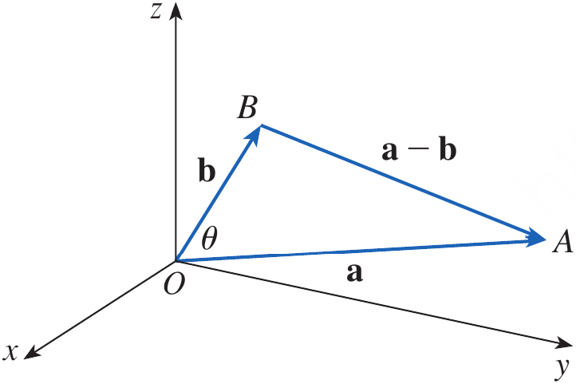
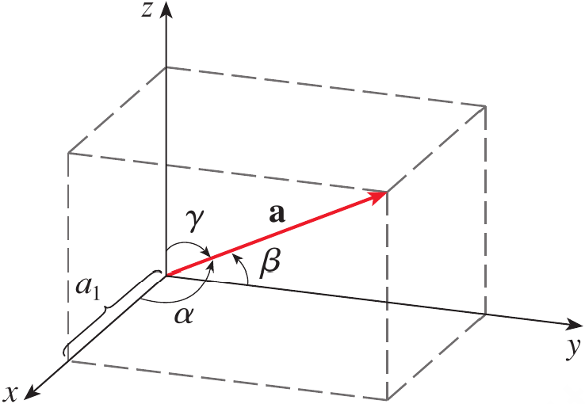
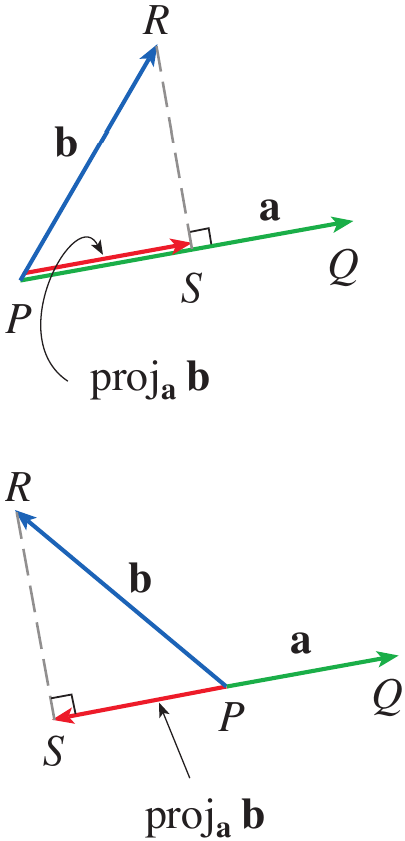
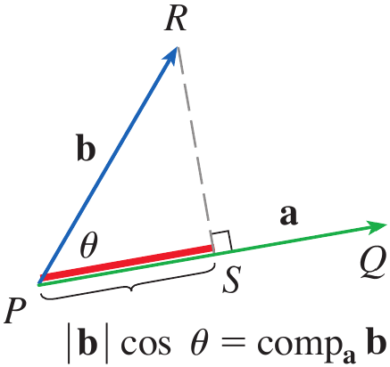
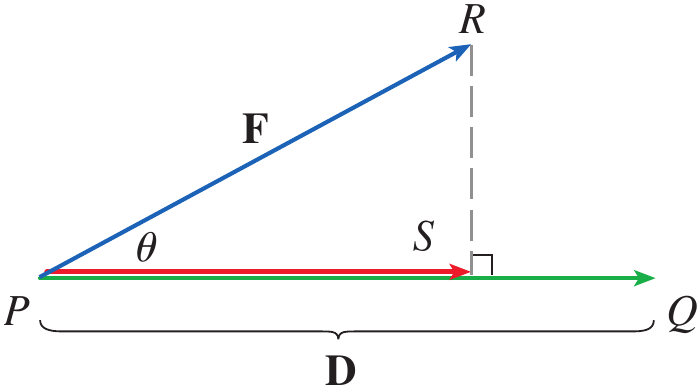

After preparing this topic, you should be able to:
Calculate the dot product of two vectors from their components and use its algebraic and geometric properties to determine relationships between vectors.
Determine the direction angles and direction cosines of a nonzero vector and use them to describe its orientation relative to the coordinate axes.
Calculate the scalar and vector projections of one vector onto another and interpret projection as the component of one vector in a specified direction.
Apply the dot product and vector projections to calculate the work done by a constant force acting through a displacement.
In engineering and computer science, vectors often describe quantities such as forces, velocities, displacements, and directions.
Sometimes vector addition and scalar multiplication are not enough because we need a single number that tells us how strongly two vectors are aligned with each other.
The dot product provides this information by combining two vectors to produce a scalar.
For example, in a robotic arm, two vectors may represent the direction of a joint force and the direction in which a component is moving.
The dot product can determine whether the two directions are generally aligned, perpendicular, or opposed.
This type of mechanical-engineering or mechatronics problem can be analyzed systematically by studying the dot product.
In three-dimensional engineering systems, a vector can point in an arbitrary direction.
Knowing its components tells us its orientation mathematically, but we may also want to know the angles that the vector makes with the positive x-, y-, and z-axes.
Direction angles and direction cosines provide a convenient way to describe this orientation.
For example, the orientation of a robotic arm, aircraft velocity vector, or force acting on a mechanical component can be described using its direction angles.
This type of three-dimensional orientation problem can be handled by studying direction angles and direction cosines.
In many physical problems, only the component of a vector acting in a particular direction is important.
For example, a force may act at an angle to the direction in which a mechanical component moves.
The entire force does not contribute equally to motion in that direction.
Projection allows us to determine the part of one vector that lies along the direction of another vector.
Therefore, scalar and vector projections provide mathematical tools for separating a vector into a component along a specified direction.
This type of force-analysis problem can be solved by studying vector projections.
In mechanics, a force does not necessarily act in the same direction as the displacement of an object.
Only the component of the force in the direction of displacement contributes to the work done.
The dot product combines the magnitude of the force, the magnitude of the displacement, and the angle between them into a single quantity.
Therefore, the work done by a constant force can be expressed directly using the dot product.
For example, pulling a wagon with a handle inclined above the horizontal requires the force and displacement to be treated as vectors.
This mechanical-engineering problem can be solved by applying the dot product to force and displacement.
The dot product is a way of multiplying two vectors so that the result is a scalar rather than another vector.
If \mathbf a and \mathbf b are three-dimensional vectors with components \mathbf a=\langle a_1,a_2,a_3\rangle and \mathbf b=\langle b_1,b_2,b_3\rangle, then their dot product is obtained by multiplying corresponding components and adding the results.
If \mathbf a=\langle a_1,a_2,a_3\rangle and \mathbf b=\langle b_1,b_2,b_3\rangle, then the dot product of \mathbf a and \mathbf b, denoted by \mathbf a\cdot\mathbf b, is
\mathbf a\cdot\mathbf b=a_1b_1+a_2b_2+a_3b_3
The result of a dot product is a real number, not a vector.
For this reason, the dot product is also called the scalar product or inner product.
For two-dimensional vectors, the same idea gives
\langle a_1,a_2\rangle\cdot\langle b_1,b_2\rangle = a_1b_1+a_2b_2
Find the following dot products.
\langle2,4\rangle\cdot\langle3,-1\rangle
\langle-1,7,4\rangle \cdot \left \langle 6,2,-\frac12 \right \rangle
(\mathbf i+2\mathbf j-3\mathbf k)\cdot(2\mathbf j-\mathbf k)
For the first product,
\begin{aligned} \langle2,4\rangle\cdot\langle3,-1\rangle &=2(3)+4(-1)\\ &=2 \end{aligned}
For the second product,
\begin{aligned} \langle-1,7,4\rangle \cdot \left \langle6,2,-\frac12 \right \rangle &=(-1)(6)+7(2)+4\left(-\frac12\right)\\ &=6 \end{aligned}
For the third product,
\begin{aligned} (\mathbf i+2\mathbf j-3\mathbf k) \cdot (2\mathbf j-\mathbf k) &=(1)(0)+(2)(2)+(-3)(-1)\\ &=7 \end{aligned}
If \mathbf a, \mathbf b, and \mathbf c are vectors in \mathbb R^3 and c is a scalar, then
\mathbf a\cdot\mathbf a=|\mathbf a|^2
\mathbf a\cdot\mathbf b=\mathbf b\cdot\mathbf a
\mathbf a\cdot(\mathbf b+\mathbf c)=\mathbf a\cdot\mathbf b+\mathbf a\cdot\mathbf c
(c\mathbf a)\cdot\mathbf b=c(\mathbf a\cdot\mathbf b)=\mathbf a\cdot(c\mathbf b)
\mathbf 0\cdot\mathbf a=0
For example, consider the first property.
\begin{aligned} \mathbf a\cdot\mathbf a &=a_1^2+a_2^2+a_3^2\\ &=|\mathbf a|^2 \end{aligned}
For the distributive property,
\begin{aligned} \mathbf a\cdot(\mathbf b+\mathbf c) &=\langle a_1,a_2,a_3\rangle \cdot \langle b_1+c_1,b_2+c_2,b_3+c_3\rangle\\ &=a_1(b_1+c_1)+a_2(b_2+c_2)+a_3(b_3+c_3)\\ &=(a_1b_1+a_2b_2+a_3b_3) +(a_1c_1+a_2c_2+a_3c_3)\\ &=\mathbf a\cdot\mathbf b+\mathbf a\cdot\mathbf c \end{aligned}
The remaining properties follow similarly from the definition of the dot product.
The dot product can also be interpreted geometrically using the angle between two vectors.
Let \theta be the angle between nonzero vectors \mathbf a and \mathbf b, where 0\leq\theta\leq\pi.

Figure 1. The geometric interpretation of the dot product using the angle between vectors \mathbf a and \mathbf b.
If \theta is the angle between the vectors \mathbf a and \mathbf b, then
\boxed{\mathbf a\cdot\mathbf b=|\mathbf a||\mathbf b|\cos\theta}
Applying the Law of Cosines to the triangle formed by \mathbf a, \mathbf b, and \mathbf a-\mathbf b gives
|\mathbf a-\mathbf b|^2 = |\mathbf a|^2+|\mathbf b|^2 -2|\mathbf a||\mathbf b|\cos\theta
On the other hand,
\begin{aligned} |\mathbf a-\mathbf b|^2 &=(\mathbf a-\mathbf b)\cdot(\mathbf a-\mathbf b)\\ &=\mathbf a\cdot\mathbf a -\mathbf a\cdot\mathbf b -\mathbf b\cdot\mathbf a +\mathbf b\cdot\mathbf b\\ &=|\mathbf a|^2-2\mathbf a\cdot\mathbf b+|\mathbf b|^2 \end{aligned}
Comparing the two expressions gives
\mathbf a\cdot\mathbf b = |\mathbf a||\mathbf b|\cos\theta
If the vectors \mathbf a and \mathbf b have lengths 4 and 6, and the angle between them is \pi/3, find \mathbf a\cdot\mathbf b.
Using the dot-product formula,
\mathbf a\cdot\mathbf b = |\mathbf a||\mathbf b|\cos\theta
Substituting the given values gives
\mathbf a\cdot\mathbf b = (4)(6)\cos\left(\frac{\pi}{3}\right)
Therefore,
\boxed{\mathbf a\cdot\mathbf b=12}
If \theta is the angle between the nonzero vectors \mathbf a and \mathbf b, then
\boxed{\cos\theta=\frac{\mathbf a\cdot\mathbf b}{|\mathbf a||\mathbf b|}}
Find the angle between the vectors
\mathbf a=\langle2,2,-1\rangle
and
\mathbf b=\langle5,-3,2\rangle
First calculate the magnitudes.
|\mathbf a| = \sqrt{2^2+2^2+(-1)^2} = 3
and
|\mathbf b| = \sqrt{5^2+(-3)^2+2^2} = \sqrt{38}
The dot product is
\mathbf a\cdot\mathbf b = 2(5)+2(-3)+(-1)(2) = 2
Therefore,
\cos\theta = \frac{2}{3\sqrt{38}}
Hence,
\theta = \cos^{-1}\left(\frac{2}{3\sqrt{38}}\right) \approx1.46
Thus,
\boxed{\theta\approx84^\circ}
Two nonzero vectors are called perpendicular or orthogonal if the angle between them is \pi/2.
Since \cos(\pi/2)=0, their dot product is zero.
Two vectors \mathbf a and \mathbf b are orthogonal if and only if
\boxed{\mathbf a\cdot\mathbf b=0}
Show that
2\mathbf i+2\mathbf j-\mathbf k
is perpendicular to
5\mathbf i-4\mathbf j+2\mathbf k
Calculate the dot product.
\begin{aligned} (2\mathbf i+2\mathbf j-\mathbf k) \cdot (5\mathbf i-4\mathbf j+2\mathbf k) &=2(5)+2(-4)+(-1)(2)\\ &=0 \end{aligned}
Therefore, the two vectors are perpendicular.
\boxed{\text{The vectors are orthogonal}}
If the angle between two nonzero vectors is less than \pi/2, then \cos\theta>0 and therefore \mathbf a\cdot\mathbf b>0.
If the vectors are perpendicular, then \mathbf a\cdot\mathbf b=0.
If the angle is greater than \pi/2, then \cos\theta<0 and therefore \mathbf a\cdot\mathbf b<0.
Thus, the sign of the dot product provides information about the general directional relationship between two vectors.
If
\mathbf a=\langle2,1,3\rangle
and
\mathbf b=\langle1,-2,4\rangle
find \mathbf a\cdot\mathbf b.
Are the vectors
\mathbf u=\langle1,2,-1\rangle
and
\mathbf v=\langle2,-1,0\rangle
orthogonal?
A nonzero vector in three-dimensional space has a definite orientation relative to the coordinate axes.
The direction angles of a vector \mathbf a are the angles \alpha, \beta, and \gamma that the vector makes with the positive x-, y-, and z-axes, respectively.

Figure 2. Direction angles \alpha, \beta, and \gamma of a vector in three-dimensional space.
The corresponding cosines \cos\alpha, \cos\beta, and \cos\gamma are called the direction cosines of the vector.
If \mathbf a=\langle a_1,a_2,a_3\rangle then the magnitude of the vector is
|\mathbf a| = \sqrt{a_1^2+a_2^2+a_3^2}
\mathbf a\cdot\mathbf i = |\mathbf a||\mathbf i|\cos\alpha
\boxed{\cos\alpha=\frac{a_1}{|\mathbf a|}}
\boxed{\cos\beta=\frac{a_2}{|\mathbf a|}, \qquad \cos\gamma=\frac{a_3}{|\mathbf a|}}
\boxed{\cos^2\alpha+\cos^2\beta+\cos^2\gamma=1}
\frac{1}{|\mathbf a|}\mathbf a = \langle\cos\alpha,\cos\beta,\cos\gamma\rangle
Find the direction angles of the vector
\mathbf a=\langle1,2,3\rangle
First find the magnitude.
|\mathbf a| = \sqrt{1^2+2^2+3^2} = \sqrt{14}
The direction cosines are therefore
\cos\alpha=\frac1{\sqrt{14}}
\cos\beta=\frac2{\sqrt{14}}
and
\cos\gamma=\frac3{\sqrt{14}}
Thus,
\alpha=\cos^{-1}\left(\frac1{\sqrt{14}}\right)\approx74^\circ
\beta=\cos^{-1}\left(\frac2{\sqrt{14}}\right)\approx58^\circ
and
\gamma=\cos^{-1}\left(\frac3{\sqrt{14}}\right)\approx37^\circ
Find the direction cosines of
\mathbf a=\langle2,2,1\rangle
For a vector with direction angles \alpha, \beta, and \gamma, what relation must its direction cosines satisfy?
Projection is useful when we want to determine how much of one vector acts in the direction of another vector.
Consider vectors \mathbf a and \mathbf b with a common initial point.

Figure 3. Vector projections of \mathbf b onto \mathbf a.
The vector projection of \mathbf b onto \mathbf a is the vector component of \mathbf b that lies in the direction of \mathbf a.
The scalar projection gives the signed length of this component.
If \theta is the angle between \mathbf a and \mathbf b, then the scalar projection is |\mathbf b|\cos\theta.
From the dot-product theorem,
\mathbf a\cdot\mathbf b = |\mathbf a||\mathbf b|\cos\theta
|\mathbf b|\cos\theta = \frac{\mathbf a\cdot\mathbf b}{|\mathbf a|}
\boxed{\operatorname{comp}_{\mathbf a}\mathbf b = \frac{\mathbf a\cdot\mathbf b}{|\mathbf a|}}
This quantity may be positive or negative depending on the direction of the projection.
It is positive when the component of \mathbf b points generally in the direction of \mathbf a and negative when it points generally opposite to \mathbf a.
\frac{\mathbf a}{|\mathbf a|}
\boxed{ \operatorname{proj}_{\mathbf a}\mathbf b = \left( \frac{\mathbf a\cdot\mathbf b}{|\mathbf a|} \right) \frac{\mathbf a}{|\mathbf a|} }
\boxed{ \operatorname{proj}_{\mathbf a}\mathbf b = \frac{\mathbf a\cdot\mathbf b}{|\mathbf a|^2}\mathbf a }

Figure 4. Scalar projection of \mathbf b onto \mathbf a.
Find the scalar projection and vector projection of
\mathbf b=\langle1,1,2\rangle
onto
\mathbf a=\langle-2,3,1\rangle
First find the magnitude of \mathbf a.
|\mathbf a| = \sqrt{(-2)^2+3^2+1^2} = \sqrt{14}
Now calculate the dot product.
\mathbf a\cdot\mathbf b = (-2)(1)+(3)(1)+(1)(2) = 3
Therefore, the scalar projection is
\boxed{ \operatorname{comp}_{\mathbf a}\mathbf b = \frac3{\sqrt{14}} }
The vector projection is
\operatorname{proj}_{\mathbf a}\mathbf b = \frac3{\sqrt{14}} \frac{\mathbf a}{|\mathbf a|}
Thus,
\begin{aligned} \operatorname{proj}_{\mathbf a}\mathbf b &= \frac3{14}\langle-2,3,1\rangle\\ &= \left\langle-\frac37,\frac9{14},\frac3{14}\right\rangle \end{aligned}
Therefore,
\boxed{ \operatorname{proj}_{\mathbf a}\mathbf b = \left\langle-\frac37,\frac9{14},\frac3{14}\right\rangle }
Find the scalar projection of
\mathbf b=\langle2,1\rangle
onto
\mathbf a=\langle1,0\rangle
What is the vector projection of \mathbf b onto \mathbf a if \mathbf a\cdot\mathbf b=0?
One important application of vector projections occurs in physics when calculating work.
If a constant force \mathbf F acts on an object while the object moves through a displacement \mathbf D, only the component of the force in the direction of the displacement contributes to the work.
If \theta is the angle between \mathbf F and \mathbf D, the scalar component of the force along the displacement is
|\mathbf F|\cos\theta
W=(|\mathbf F|\cos\theta)|\mathbf D|
\boxed{W=\mathbf F\cdot\mathbf D}

Figure 5. Force vector \mathbf F and displacement vector \mathbf D showing the component of force in the direction of motion.
A wagon is pulled a distance of 100;m along a horizontal path by a constant force of 70;N. The handle of the wagon is held at an angle of 35^\circ above the horizontal. Find the work done by the force.
The force and displacement vectors have magnitudes
|\mathbf F|=70\;N
and
|\mathbf D|=100\;m
The angle between them is
\theta=35^\circ
Therefore,
\begin{aligned} W &=\mathbf F\cdot\mathbf D\\ &=|\mathbf F||\mathbf D|\cos35^\circ\\ &=(70)(100)\cos35^\circ \end{aligned}
Hence,
\boxed{W\approx5734\;J}
A force is given by the vector
\mathbf F=3\mathbf i+4\mathbf j+5\mathbf k
and moves a particle from the point P(2,1,0) to the point Q(4,6,2). Find the work done.
The displacement vector is
\mathbf D=\overrightarrow{PQ}
Therefore,
\mathbf D = \langle4-2,6-1,2-0\rangle = \langle2,5,2\rangle
The work is the dot product of the force and displacement.
\begin{aligned} W &=\mathbf F\cdot\mathbf D\\ &=\langle3,4,5\rangle\cdot\langle2,5,2\rangle\\ &=3(2)+4(5)+5(2)\\ &=36 \end{aligned}
Therefore,
\boxed{W=36\;J}
A constant force
\mathbf F=\langle4,3\rangle\;N
moves an object through
\mathbf D=\langle5,2\rangle\;m
Find the work done.
A force and displacement are perpendicular. What is the work done by the force?
A robotic gripper in a mechatronic system applies a constant force
\mathbf F=30\mathbf i+40\mathbf j\;N
while moving an object from
P(1,2)
to
Q(7,10)
where the coordinates are measured in meters.
Determine the displacement vector and the work done by the gripper.
The displacement vector is obtained from the initial and terminal points.
\mathbf D = \overrightarrow{PQ} = \langle7-1,10-2\rangle
Therefore,
\mathbf D=\langle6,8\rangle\;m
The work done by the constant force is the dot product of the force and displacement vectors.
\begin{aligned} W &=\mathbf F\cdot\mathbf D\\ &=\langle30,40\rangle\cdot\langle6,8\rangle\\ &=30(6)+40(8)\\ &=180+320\\ &=500 \end{aligned}
Therefore,
\boxed{W=500\;J}
This scenario combines the vector representation and vector operations developed earlier with the dot-product application to work. The uploaded vector lecture establishes displacement vectors from two points and component-based vector operations, while the Stewart material develops work as the dot product of force and displacement.
The dot product of two vectors is a scalar obtained by multiplying corresponding components and adding the results.
The dot product satisfies important properties including commutativity, distributivity, scalar multiplication, and \mathbf a\cdot\mathbf a=|\mathbf a|^2.
Geometrically, the dot product is related to the angle between two vectors by \mathbf a\cdot\mathbf b=|\mathbf a||\mathbf b|\cos\theta.
Two vectors are orthogonal if and only if their dot product is zero.
The direction angles \alpha, \beta, and \gamma describe the angles a vector makes with the positive coordinate axes.
The corresponding direction cosines satisfy \cos\alpha=a_1/|\mathbf a|, \cos\beta=a_2/|\mathbf a|, and \cos\gamma=a_3/|\mathbf a|.
The direction cosines satisfy \cos^2\alpha+\cos^2\beta+\cos^2\gamma=1.
The scalar projection of \mathbf b onto \mathbf a is \operatorname{comp}*{\mathbf a}\mathbf b=(\mathbf a\cdot\mathbf b)/|\mathbf a|, while the vector projection is \operatorname{proj}*{\mathbf a}\mathbf b=(\mathbf a\cdot\mathbf b)\mathbf a/|\mathbf a|^2.
The work done by a constant force \mathbf F through a displacement \mathbf D is given by W=\mathbf F\cdot\mathbf D.
The central idea of this topic is that the dot product converts directional information between vectors into a scalar quantity that can be used to analyze angles, orthogonality, projections, and physical work.
Exercises help transform theoretical concepts into practical understanding.
Mathematics is learned by doing and solving exercises will train you to analyze problems, select appropriate methods, and construct logical solutions.
Attempting problems sometimes leads to mistakes which provide opportunities for learning and improvement.
Regular practice increases speed, accuracy, and confidence.
Exercises are given in the Exercises file and you are expected to solve them on your own.